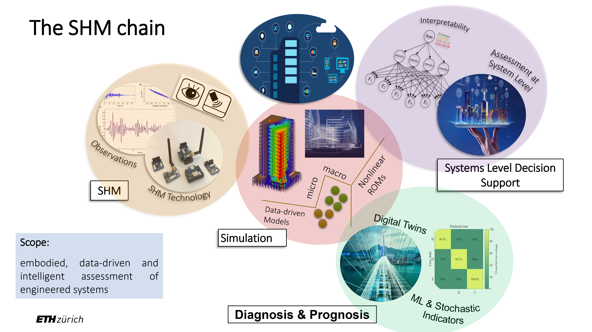

This blog offers informed opinions and perspectives relating to nascent technologies in data-centric engineering. The DCE journal co-editor-in-chief Prof. Eleni Chatzi (Chair of Structural Mechanics at ETH Zürich) discusses emerging themes of physics-informed machine learning, digital twins, and systems thinking.
Over past 17 years, and in my current capacity as Chair of Structural Mechanics & Monitoring at ETH Zurich, I have been working on the coupling of data with models that are driven from first principles (physics, mechanics, dynamics) to efficiently track and simulate monitored systems. Today, data seems omnipresent and abundant, as it is possible to extract from diverse products, processes, and structures. In the domain of Structural Health Monitoring (SHM), data of various forms can be obtained from sensors that can be deployed (via attachment, mobile sensing or remotely) on structures or mechanical systems. Contrary to popular belief, such systems are, in fact, like living, breathing organisms, which experience motion, and injury — they are exposed to adverse loads and natural hazards, age and deteriorate. Damage to such systems, which form our critical infrastructure and transportation networks, implies economic loss and impairment of our mobility and societal structures. In isolated cases, structures that fail can cost human lives. With a view to safeguard and protect structures and engineered systems, SHM essentially proposes a chain-like architecture, with the first link pertaining to data collection. However, data alone is not enough. Engineering models offer the opportunity to complement our observations by seeding in positive inductive biases, which allow us to filter raw data into interpretable and explainable information. Such models typically rely on principles of mechanics and dynamics. Oftentimes, these even come in the form of empirical laws.

The fusion of data with physics-based models is often referred to as hybrid modelling, and it allows us to create virtualisations or Digital Twins of engineered systems. Hybrid models often rely on Machine Learning (ML) schemes to model the portion of the physics that remains unknown, in which case, the term physics-enhanced model can be used. The balancing of physics involved with the amount of data available prescribes, in essence, a spectrum of possible schemes, which can rely more or less on the underlying physics-based assumptions (covering a white-to-grey-to-black box range). The information generated from such a merger can then be fed into the third link of the SHM chain, which corresponds to the task of diagnosis and prognosis, concerning the performance of these systems. In the very final link, the intention is to capitalise on the knowledge gained from the finite set of monitored instances, to support decisions and management at the systems level. For instance, the set of bridges and tunnels across a roadway network, the wind turbines within a farm, or the portfolio of offshore farms in the North Sea.
In a way, this chain is a natural parallel of the umbrella concept that is data science, since, at its core lie the concepts of data, computing, and algorithms to enable cognitive tasks. I am thrilled to have joined the DCE team as a co-editor-in-chief. I share its mission to explore the benefits of data science to improve the reliability, resilience, safety, and usability of engineered systems, and to promote autonomy and self-awareness in our engineered world.
Competing Interest: Eleni Chatzi is currently an Associate Professor, and the Chair of Structural Mechanics, at the Institute of Structural Engineering, of the Department of Civil, Environmental and Geomatic Engineering (DBAUG), ETH Zürich. She is also a co-editor-in-chief of the DCE journal.
Keywords: Physics-informed machine learning; Digital Twin Technology; Systems thinking; Data assimilation; Structural Health Monitoring
This is the blog for Data-Centric Engineering, an open-access journal published by Cambridge University Press and supported by the Lloyd’s Register Foundation. You can also find us on LinkedIn. Here are instructions for submitting an article to the journal.